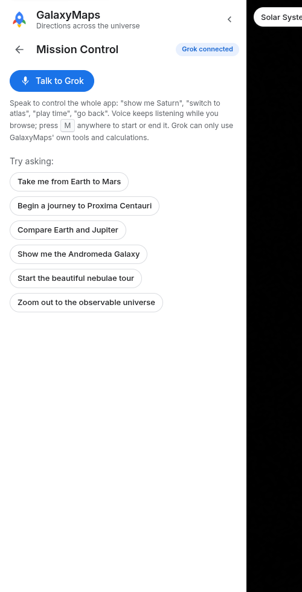
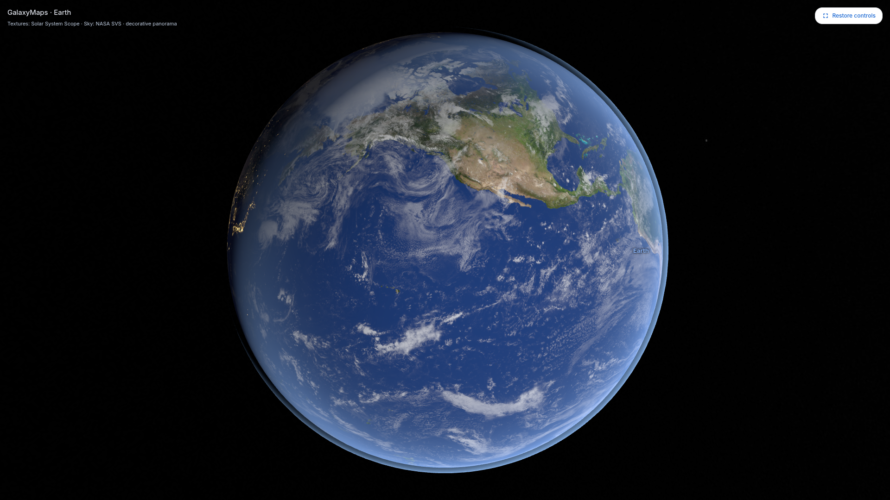
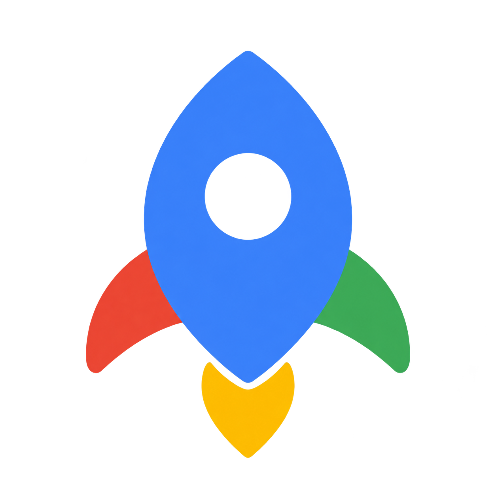
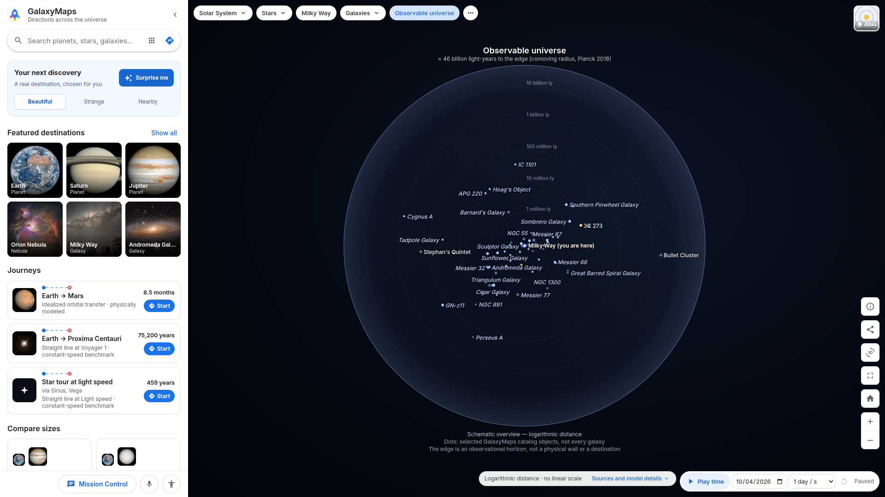
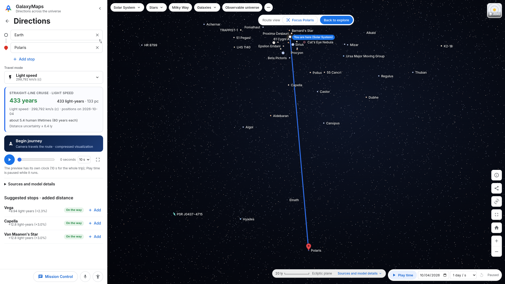
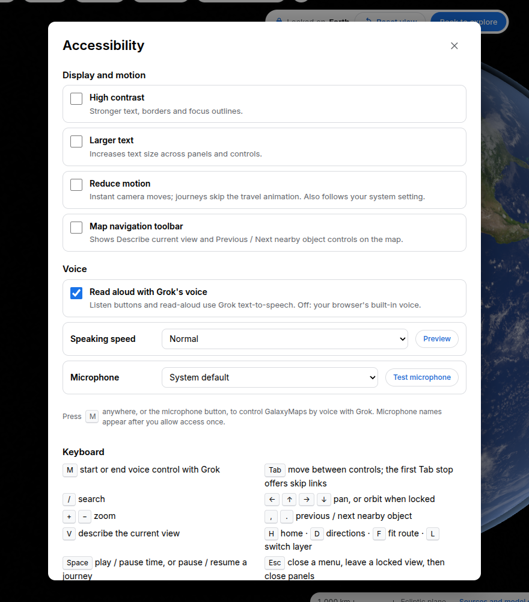
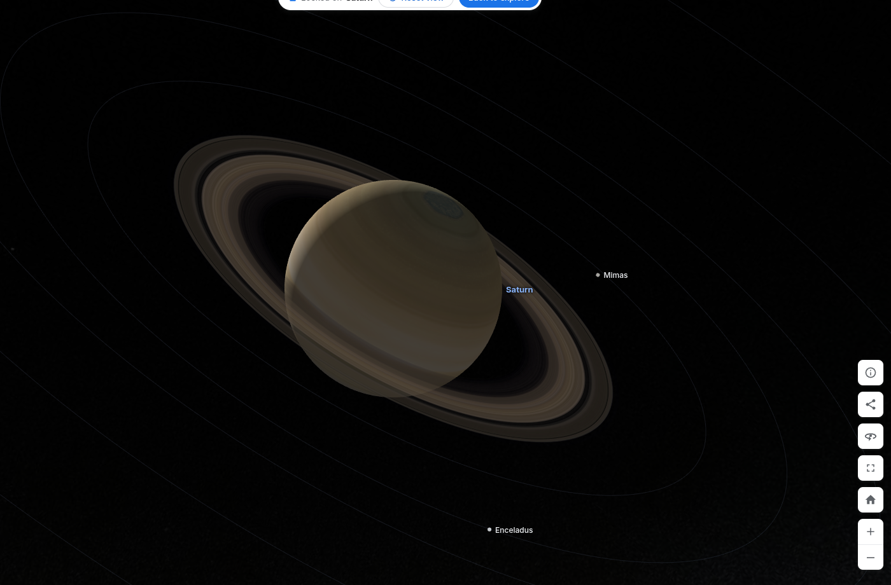
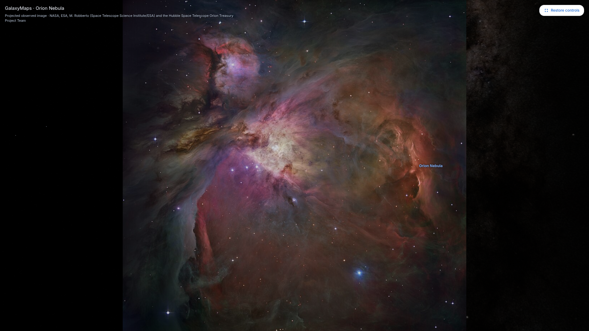

Conversational navigation
Grok Mission Control talks and steers the map through validated tools only.


Google Maps for the universe.
Explore the universe through a familiar, interactive map.

The problem
Astronomy data is public — and still hard to feel.
Scale is unintuitive. Polaris is 433 light-years away.
Everyone already knows how to use a map.
Switch to live demo now

How it works
JPL Horizons, SIMBAD, HYG, NASA fact sheets, exoplanet archive.
3D distances, Hohmann transfers, parallax rules, cited sources.
One continuous map, routes, lock-on camera, Play time.
Voice tools, accessible UI, immersive VR on the same map.
AI explains and controls. Code calculates.
Why it is different

Grok Mission Control talks and steers the map through validated tools only.

Keyboard, screen reader, voice, and reduced-motion paths — built toward WCAG 2.2 AA.

WebXR uses the same 3D map: gaze, pinch, and Grok Voice in VR.

GalaxyMaps
GalaxyMaps — Directions across the universe.
Backup A
919 catalog objects, 109,389 HYG stars, Horizons ephemeris. Offline after load.
Pure TypeScript: coords, routes, Hohmann, Kepler, parallax, itinerary.
Float64 ICRF km, camera-relative projection, Three.js, no React Three Fiber.
Shareable exact views. Home, lock, route, comparison, tours, sky chart.
One tool layer for Grok Voice and the labeled offline guide. Numbers come from the app.
Key stays server-side. Ephemeral voice tokens, TTS, STT, chat, Imagine.
Backup B
Idealized Hohmann transfer: about 259 days (8.5 months), with Δv, next window, and a separate straight-line benchmark.
True 3D separation ≈ 433 ly. 433 years at light speed; about 7.7 million years at Voyager 1’s measured speed.
Backup C
Backup D